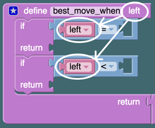

<link rel="import" href="../components/polymer/polymer.html">
<link rel="import" href="../components/core-signals/core-signals.html">
<link rel="import" href="../components/core-label/core-label.html">
<link rel="import" href="../components/core-selector/core-selector.html">
<link rel="import" href="../components/paper-checkbox/paper-checkbox.html">
<link rel="import" href="../components/paper-slider/paper-slider.html">
<link rel="import" href="../components/paper-button/paper-button.html">
<link rel="import" href="../blockly-element/blockly-element.html">
<link rel="import" href="../game-level/game-level.html">


<!--
Customises blockly-element to provide AI opponent for takers

##### Example

    <takers-ai></takers-ai>

@element takers-ai
@blurb Customises blockly-element to provide AI opponent for takers
@status alpha
@homepage http://polymerlabs.github.io/takers-ai
-->
<polymer-element name="takers-ai" attributes="total goal level maxadd">

  <template>

    <style>
      :host {
        display: block;
        position: relative;
        height: 100%;
        width: 100%;
        font-family: 'RobotoDraft', sans-serif;
        background-color: rgba(213, 87,187, 0.33);
        background-color: rgba(205, 158, 232, 0.33);
      }
      :host core-header-panel {
        position: relative;
        height: 100vh;
        width:100%;
      }
      :host core-toolbar {
/*         background-color: rgb(205, 158, 232); */
        background-color: rgb(0, 94, 111);
        color: white;
      }
      :host .content {
        padding: 0px;
        height: calc(100%);
      }
      :host input {
        width: 60px;
        font-size:30px;
        margin-top: 0px;
      }
      .box {
        position: relative;
      }
      .board {
      }
      .square {
        min-width:50px;
        border-radius: 10px;
        background-color: #ffffff;
        vertical-align: middle;
        text-align: center;
        font-size: 20px;
        margin: 2px 0px;
      }
      .square::shadow #ripple {
        color: purple;
      }
      .square[disabled] {
        color: #ffffff;
        background-color: rgb(59, 220, 217);
      }
      .square[computer=true] {
        black: #ffffff;
        opacity: 1;
        color: #000000;
        border: 1px solid #888888;
        background-color: #D4FF28;
      }
      .small {
        zoom: 0.5;
      }


      /* start drawer CSS */
      #mainheader {
          color: #ffffff;
          opacity: 1;
          background-color: rgba(51, 181, 181, 1)
      }
      #mainDrawer {
          color: #DFEFFF;
          opacity: 1;
          background-color: rgba(53, 100, 145, 1);
          padding:40px;
      }

      .playButton {
          margin-top: 10px;
          clear: both;
      }
      .playButton .level {
          background-color: #FF7777;
          width: 400px;
          height: 69px;
          border-radius:10px;
          margin: 0;
          font-size: 20px;
          color: #ffffff;        
      }
      .playButton .level .big {
        height: 40px;
        width: 40px;
        color: white;
      }
      .playButton .level .one {
          margin-top: 0px;
          background-color: rgb(255, 119, 119);
      }
      .playButton .level .two {
          background-color: rgb(151, 231, 51);
      }
      .playButton .level .three {
          background-color: rgb(110, 110, 255);
      }
      .playButton .level .four {
          background-color: #FA3F78;
      }
      .playButton .level .five {
          background-color: #FA3F78;
      }
      .playButton .level .six {
          background-color: #FA3F78;
      }

      game-level {
        display: none;
      }
      game-level.core-selected {
        display: block;
      }
      game-level::shadow .level {
          background-color: rgba(34, 255, 179, 1);
          width: 400px;
          height: 69px;
          border-radius:5px;
          margin: 0;
          font-size: 20px;
          color: #ffffff;
      }

      game-level::shadow .one {
          background-color: rgb(255, 119, 119);
      }
      game-level::shadow .two {
          background-color: rgb(151, 231, 51);
      }
      game-level::shadow .three {
          background-color: rgb(110, 110, 255);
      }
      game-level::shadow .four {
          background-color: #FA3F78;
      }
      game-level::shadow .level .big {
        height: 40px;
        width: 40px;
        color: white;
      }
      game-level p {
        padding:0;
        font-size: 20px;
        width: calc(100% - 60px);
        //margin-bottom: -6px;
      }
      .marker {
          height: 20px;
          width: 20px;
          display: inline-block;
          border-radius: 3px;
          box-shadow: 1px 1px 2px #553333;
      }
      .player {
          background-color: #ffffff;
      }
      .computer {
          background-color: #FF7777;
      }
      .settings {
        font-size: 25px;
        background-color: rgb(0, 40, 92);
        color: white;
        padding: 15px 28px 20px;
        margin: 20px 0px 0px 0px;
      }
      .settings .changer {
        float: right; 
        background-color: #356491;
        color: #000088;
        font-size: 80%;
      }
      .settings .changer4 {
        float: right; 
        background-color: #33B55C;
        color: #ffffff;
        font-size: 80%;
      }
      .arrowLevels {
        vertical-align: middle;
        top: 17px;
        left: 6px;
      }
      .barLevels {
        border: 3px solid white;
        border-radius: 30px;
        min-width: 50px;
        height: 50px;
        margin: 5px;
        font-size: 17px;
        margin-left: 0px;
        margin-right: -11px;
      }
      .barLevels.core-selected {
        background-color: rgba(51, 190, 208, 1);
        color: #FFFFFF;
      }
      #mainheader .barLevels.core-selected {
        background-color: rgba(255, 119, 119, 1);
        color: #FFFFFF;
      }
      p.valign * {
        padding: 5px 5px;
        vertical-align: middle;
        display: inline-block;
      }
      .counter {
        background-color: rgba(255, 0, 64, 0.7);
        width: 30px;
        height: 30px;
        display: inline-block;
        //vertical-align: middle;
        border-radius: 15px;
      }
      .variables {
        padding-right: 10px;
        float: left;
      }
      .twocol {
        margin: 20px 40px 0px 0px;
        display: inline-block;
        clear: both;
        width: 100%;
      }
      div.blocks {
        clear: both;
        width: 180px;
        float:left;
      }
      div.blocks img {
        float:right;
        width: calc(100% - 10px);
        margin-top: 20px;
      }
/*       #level6 div.blocks img {
        margin-top: 20px;
      } */
      /* end drawer CSS */

    </style>
    <core-signals id="signals"></core-signals>


    <div vertical layout>
      <core-drawer-panel id="progress" forceNarrow rightDrawer="true" drawerWidth="100%">

        <core-header-panel id="drawer" drawer flex>


          <core-toolbar id="mainheader" justify="between">
              <core-selector selected="{{2*(level-1)}}" layout horizontal>
                <paper-button id="D1" class="barLevels"  raised>1</paper-button>
                <core-icon class="arrowLevels" icon="arrow-forward"></core-icon>
                <paper-button id="D2" class="barLevels" raised>2</paper-button>
                <core-icon class="arrowLevels" icon="arrow-forward"></core-icon>
                <paper-button id="D3" class="barLevels" raised>3</paper-button>
                <core-icon class="arrowLevels" icon="arrow-forward"></core-icon>
                <paper-button id="D4" class="barLevels" raised>4</paper-button>
                <core-icon class="arrowLevels" icon="arrow-forward"></core-icon>
                <paper-button id="D5" class="barLevels" raised>5</paper-button>
                <core-icon class="arrowLevels" icon="arrow-forward"></core-icon>
                <paper-button id="D6" class="barLevels" raised>6</paper-button>
              </core-selector>
            <paper-icon-button icon="arrow-forward" id="closeProgressButton" raised>hello</paper-icon-button>
          </core-toolbar>


<!--           <core-toolbar id="mainheader">
            <span flex>Level {{level}}</span>
            <paper-icon-button icon="arrow-forward" id="closeProgressButton" raised>hello</paper-icon-button>
          </core-toolbar>
 -->
          <div id="mainDrawer" id="mainDrawer" style="min-height:150vh">
            <core-selector id="gameLevels" selected="{{level-1}}">
              <game-level  id="level1" selector="level one"  buttonLabel="Play Level 1">

                <h1>Level 1: Play 'Got it!' against </h1>
                <h2>How to play 'Got it!'</h2>
                <p>You and AL take turns to go. You can only move up to 4 squares at a time.</p>
                <p>The player to land on the star wins.</p>
                <p> 
                  When it's your go, click on one of the the white squares <span class="player"></span> 
                  available to you.
                </p>
                <p>AL will then choose from one of the pink squares <span class="computer"></span> 
                  that become available.
                </p>

                <div class="playButton" layout horizontal end-justified>
                  <paper-button class="level one" role="button" tabindex="0" on-click="{{play1}}" raised>
                    <core-icon class="big" icon="star"></core-icon>
                    Play 'Got it!'
                  </paper-button>
                </div>

                <h2>Play against a different algorithm</h2>

                <p class="valign">
                   can use , 
                  , or
                  .
                </p>

                <p>
                  Change the program by snapping a different algorithm into place.
                </p>
                

                <p><em>
                  Can you predict AL's moves?<br>
                </em></p>
                <p><em>
                   Which is the hardest algorithm to beat?
                </em></p>

                <div class="playButton" layout horizontal end-justified>
                <paper-button class="level one" role="button" tabindex="0" on-click="{{play1}}" raised>
                  <core-icon class="big" icon="star"></core-icon>
                  Try them all
                </paper-button>
                </div>


              </game-level>

              <game-level id="level2" selector="level two" buttonLabel=>
                
                <h1>Level 2: Play AL at his best</h1>

                <p>
                  AL has had a little time to improve his algorithm. He's convinced he has the
                  best one now.
                </p>
                <p>
                  However, we're going to make life a little hard for him by choosing games
                  that a good player can always win.
                </p>

                <p>
                  <em>Can you always win in this level?</em>
                </p>


                <p> 
                  Take care!
                  AL will take advantage of the slightest mistake.
                </p>


                <div class="settings">
                  <paper-button id="level2GameChanger" class="changer4" raised>Change Game</paper-button>
                  In this game,
                  <ul>
                    <li>you can move up to {{maxadd}} squares</li>
                    <li>the target star is on square {{goal}}</li>
                  </ul>
                </div>

                <div class="playButton" layout horizontal end-justified>
                  <paper-button class="level one" role="button" tabindex="0" on-click="{{play2}}" raised>
                    <core-icon class="big" icon="star"></core-icon>
                    Play AL!
                  </paper-button>
                </div>

                <h2>Discover the 'natural width' of 'Got it!'</h2>
                <p>
                  Drag the vertical screen divider to alter the width of the game.
                  <em>Can you find a natural width that makes it easy to win?</em>
                  How is this natural width related to the number of white buttons?
                </p>

                <h2>Keep an eye on these blocks</h2>

                <div class="twocol">
                <div class="blocks">
                
                </div>
                <p>We've added some new blocks to this level which you'll use in later levels. Keep an eye on
                them. You should see they contain numbers that describe the shape of the game and how it is
                progressing. In later levels you can use these numbers to design AL's algorithms.</p>
                </div>

              </game-level>

              <game-level  id="level3" selector="level three"  buttonLabel="Play" iconName="star">
                <h1>Level 3: Program AL</h1>
                <p>
                  AL has forgotten how to play. You're going to have to teach him!
                </p>
                <p>Let's start with some games that AL can <em>always</em> win if he plays his best.</p>
                <p><em>Can you teach him how to play again?</em></p>

                <div class="settings">
                  <paper-button id="level3GameChanger" class="changer4" raised>Change Game</paper-button>
                  In this game,
                  <ul>
                    <li>you can move up to {{maxadd}} squares</li>
                    <li>the target star is on square {{goal}}</li>
                  </ul>
                  <core-label horizontal layout end-justified id="alabel">
                    <div>Choose games AL can win &nbsp;</div>
                    <paper-checkbox id="level3AlCanWin" checked="true"></paper-checkbox>
                  </core-label>
                </div>

                <div class="playButton" layout horizontal end-justified>
                  <paper-button class="level one" role="button" tabindex="0" on-click="{{play}}" raised>
                    <core-icon class="big" icon="star"></core-icon>
                    Program and Play AL
                  </paper-button>
                </div>


                <p><em>Change the game. How do you have to change your program to keep it working?</em></p>

                <p><em>Change the check box to generate a game that AL could lose. Does your program
                still make sensible choices?</em></p>

                <p><em>If you tell AL to do something against the rules of the game, then it's likely he'll be
                disqualified.</em></p>

                <div class="twocol"><div class="blocks"></div>
                <p>Use this block to ask AL to try to reach a square with a given number. You'll need to snap 
                on the number that AL should go for. If that square can be reached within the rules of the game,
                AL will move there. If not, AL do something else. You'll need to tell AL what else.</p>
                </div>

                <div class="twocol"><div class="blocks"></div>
                <p>This new block allows you to insert a number into your program. Click on the number inside to
                edit it.</p>
                </div>

                <div class="twocol"><div class="blocks"></div>
                <p>Use this panel to control how fast AL executes the code. At slower speeds you can see the blocks
                being highlighted as they run.</p>
                </div>

                <div class="twocol"><div class="blocks"></div>
                <p>Switch to stepping if you want AL to single step through the code.</p>
                </div>


              </game-level>

              <game-level  id="level4" selector="level four"  buttonLabel="Play" iconName="star">

                <h1>Level 4: Start a general program for AL</h1>
  
                <p>
                  Hopefully you found a way to restore AL's memory in level 3. You may also have discovered that
                  you had to reprogram AL for each new game, and that was pretty tedious. We need to find a more
                  general program.
                </p>

                <h2>Using the natural width</h2>
                <p>
                  In level 2, you discovered that the 'Got it!' layout has a natural width. If you know the 
                  natural width of a game, it's easy to win. 
                </p>
                <p>
                  The neat thing about the natural width is that if the game has that width, then you can discard
                  complete rows of squares when calculating your best move. Al could use that idea perhaps. Let's 
                  start by giving AL a function he can use to calculate the natural width of any game. 
                </p>

                <div class="twocol">
                <div class="blocks">
                
                </div><p>
                Drag the 'define width' block into the programming area, and fill in the calculation you need to
                tell AL how to work out the natural width of a game. You'll need to use the number of white squares
                in the game. e.g. in our example, you'd use the [5 ....] block.</p>
<br>
                <p>We're defining 'width' here as a function that uses the value [5 ....], and <em>returns</em> a 
                calculated width value. Once the function is defined, the returned 'width' value is available for
                use elsewhere in the program.</p>

                <p>Go back to level 2 if you're unsure how to calculate the natural width of a game.</p>
                </div>

                <h2>Write the main algorithm</h2>

                <div class="twocol">
                <div class="blocks">
                
                </div><p>
                  Let's imagine there's a way to work out the best move if we know how many squares
                  are left to travel. Let's call this the 'best_move_when' function.</p>
                  <p>Can you assemble these blocks into a complete program that tells AL how to move?</p>
                </div>

                <p>Try it. The program won't work yet because we still have to define the best_move_when function.
                We'll do that in level 5.</p>

                <div class="playButton" layout horizontal end-justified>
                  <paper-button class="level one" role="button" tabindex="0" on-click="{{play}}" raised>
                    <core-icon class="big" icon="star"></core-icon>
                    Write the main algorithm
                  </paper-button>
                </div>

              </game-level>

              <game-level  id="level5" selector="level five"  buttonLabel="Play" iconName="star">

                <h1>Level 5: Finish a general program for AL</h1>

                <em>This is tricky, so let's go through it step by step.</em>

                <h2>1. Recap on level 4</h2>

                <p>Level 4 showed you how to make a 'natural width' function, and you then assembled blocks into
                a main program. This step is filled in already.</p>

                <div class="playButton" layout horizontal end-justified>
                  <paper-button class="level one" role="button" tabindex="0" on-click="{{play}}" raised>
                    <core-icon class="big" icon="star"></core-icon>
                    Check level 4 steps
                  </paper-button>
                </div>


                <h2>2. Define the 'best_move_when' function</h2>

                <h3>Passing a value to a function</h3>

                <p>A mathematical function takes one or more input values and generates an output value. 
                We need one block to use it and pass it its input(s), and another block to define what it does.
                </p>

                <div class="twocol">
                <div class="blocks">
                
                </div>
                <p>
                The 'best_move_when' function should return the best number of squares to move for any possible number
                of squares left to go. If there is no good move it should pick a valid move.
                </p>
                </div>

                <div class="twocol">
                <div class="blocks">
                
                </div>
                <p>When defining the 'best_move_when' function,
                call the number we input 'left',</p>
                <p>and use it to calculate and return the best move. You can use other values like
                the width of the game or the maximum move in the calculation.</p>
                </div>

                <h2>3. Do the easy cases first</h2>

                <p>Imagine a game where AL can move at most 5 squares on his turn, so the natural width of the game
                is 6.</p>
                <div class="twocol">
                <div class="blocks">
                
                </div>
                <p>There are two easy cases to handle.</p>
                <p><em>If there are exactly 6 squares left to go, can you pick a valid move for AL?</em></p>
                <p><em>If there are fewer than 6 squares left to go, what is AL's best move?</em></p>
                </div>

                <p>Fill in the two 'if' blocks, and make sure they return sensible choices. Try to use blocks
                that will adapt to the shape of the game if it changes.</p>

                <div class="playButton" layout horizontal end-justified>
                  <paper-button class="level one" role="button" tabindex="0" on-click="{{play}}" raised>
                    <core-icon class="big" icon="star"></core-icon>
                    Handle 2 easy cases
                  </paper-button>
                </div>

                <h2>4. Solve all but a smaller problem</h2>

                <p>What should AL do if there are more than 6
                squares to go? Remember that in our example, 6 is the natural width of the game, since the
                maximum allowed move is 5.</p>

                <div class="twocol">
                <div class="blocks">
                
                </div>
                <p><em>Can you see that discarding a whole row of squares would not change the best move?</em> 
                Provided, of course that the game is set to its natural width!</p>
                <p><em>Can you use this fact to make the problem smaller?</em></p>
                <p><em>Fill in the final return to implement this idea.</em></p> 
                </div>

                <div class="settings">
                  <paper-button id="level5GameChanger" class="changer4" raised>Change Game</paper-button>
                  In this game,
                  <ul>
                    <li>you can move up to {{maxadd}} squares</li>
                    <li>the target star is on square {{goal}}</li>
                  </ul>
                  <core-label horizontal layout end-justified id="alabel">
                    <div>Choose games AL can win &nbsp;</div>
                    <paper-checkbox id="level5AlCanWin" checked="true"></paper-checkbox>
                  </core-label>
                </div>

                <div class="playButton" layout horizontal end-justified>
                  <paper-button class="level one" role="button" tabindex="0" on-click="{{play}}" raised>
                    <core-icon class="big" icon="star"></core-icon>
                    Test your program
                  </paper-button>
                </div>

                <p>This is an example of a recursive algorithm - one that is defined in terms of itself.
                The algorithm stops because it always gives itself a smaller problem to solve.
                Eventually it must give itself a problem that it can solve without self reference
                in one of the two easy easy cases.</p>
              </game-level>

              <game-level  id="level6" selector="level six"  buttonLabel="Play" iconName="star">

                <h1>Level 6: Let's get mathematical</h1>

                <p>Level 5 was rather tricky. Maybe there's an easier way that does not involve iteration
                or recursion?</p>

                <p>
                  The neat thing about setting the game to a natural width is that whole rows can then be
                  discarded without changing the best move. That sounds a lot like the mathematical operation 
                  of 'casting out' or 'taking the modulus'. It's the same as finding the remainder when we 
                  divide a larger number by a smaller one.
                </p>
                
                <p>
                Why don't we use this idea to discard <em>all</em> whole rows at once?
                </p>

                <div class="twocol">
                <div class="blocks">
                
                </div>
                <p><em>What would we have to feed this block to return a winning move?</em></p>
                <p><em>Could it return a move we would not be allowed to make?</em></p> 
                </div>

                <div class="twocol">
                <div class="blocks">
                
                </div>
                <p><em>This block would allow us to test for an invalid move and return a valid
                one instead.</em></p>
                </div>

                <div class="twocol">
                <div class="blocks">
                
                </div>
                <p><em>This block will return true or false depending on whether its inputs are equal or not.</em></p>
                <p><em>The drop down on the '=' offers other options.</em></p>
                </div>

                <div class="twocol">
                <div class="blocks">
                
                </div>
                <p><em>This block will add its inputs.</em></p>
                <p><em>The drop down on the '+' offers other options.</em></p>
                </div>

                <div class="settings">
                  <paper-button id="level6GameChanger" class="changer4" raised>Change Game</paper-button>
                  In this game,
                  <ul>
                    <li>you can move up to {{maxadd}} squares</li>
                    <li>the target star is on square {{goal}}</li>
                  </ul>
                  <core-label horizontal layout end-justified id="alabel">
                    <div>Choose games AL can win &nbsp;</div>
                    <paper-checkbox id="level6AlCanWin" checked="true"></paper-checkbox>
                  </core-label>
                </div>

                <div class="playButton" layout horizontal end-justified>
                  <paper-button class="level one" role="button" tabindex="0" on-click="{{play}}" raised>
                    <core-icon class="big" icon="star"></core-icon>
                    Test your program
                  </paper-button>
                </div>

              </game-level>

            </core-selector>  
          </div>
        </core-header-panel> <!-- end drawer -->


        

        <!-- start blockly ai layer -->
        <core-header-panel id="chPanel" mode="waterfall" layout vertical main>

          <core-toolbar id="toolbar" justify="between">
              <core-selector selected="{{2*(level-1)}}" layout horizontal>
                <paper-button id="L1" class="barLevels"  raised>1</paper-button>
                <core-icon class="arrowLevels" icon="arrow-forward"></core-icon>
                <paper-button id="L2" class="barLevels" raised>2</paper-button>
                <core-icon class="arrowLevels" icon="arrow-forward"></core-icon>
                <paper-button id="L3" class="barLevels" raised>3</paper-button>
                <core-icon class="arrowLevels" icon="arrow-forward"></core-icon>
                <paper-button id="L4" class="barLevels" raised>4</paper-button>
                <core-icon class="arrowLevels" icon="arrow-forward"></core-icon>
                <paper-button id="L5" class="barLevels" raised>5</paper-button>
                <core-icon class="arrowLevels" icon="arrow-forward"></core-icon>
                <paper-button id="L6" class="barLevels" raised>6</paper-button>
              </core-selector>
            <paper-icon-button icon="menu" on-click="{{openDrawer}}">Levels</paper-icon-button>
          </core-toolbar>

          <div class="content" fit layout vertical>

            <blockly-element id="bwc" cfg="blockly-element/blockly" class="blocks" trashcan="true" flex five>
              <xml style="display: none">
                <block type="al_gorithm"></block>
                <block type="a1"></block>
                <block type="a2"></block>
                <block type="a3"></block>
              </xml>    
            </blockly-element>
          </div>
        </core-header-panel>
        <!-- end blockly ai layer -->

      </core-drawer-panel>
    </div>

    <xml id="toolbox1"  style="display: none">
      <block type="a1"></block>
      <block type="a2"></block>
      <block type="a3"></block>
    </xml>
    <xml id="startBlocks1" style="display: none">
      <block type="al_gorithm"  x="0" y="20" deletable="false" movable="false">
        <value name="algorithm">
          <block type="a1"></block>
        </value>
      </block>
    </xml>

    <xml id="toolbox2"  style="display: none">
      <block type="takers_goal" deletable="false" movable="false"></block>
      <block type="takers_maxadd" deletable="false" movable="false"></block>
      <block type="takers_total" deletable="false" movable="false"></block>
    </xml>
    <xml id="startBlocks2" style="display: none">
      <block type="al_best" x="20" y="20" deletable="false" ></block>
    </xml>

    <xml id="toolbox3"  style="display: none">
      <block type="takers_computer"></block>
      <block type="takers_try_else"></block>
      <block type="takers_move_one"></block>
      <block type="takers_move_n"></block>
      <block type="takers_goal"></block>
      <block type="math_number"></block>
      <block type="takers_maxadd"></block>
      <block type="math_random_int" inline="false">
        <value name="FROM">
          <block type="math_number">
            <field name="NUM">1</field>
          </block>
        </value>
        <value name="TO">
          <block type="takers_maxadd"></block>
        </value>
      </block>
    </xml>
    <xml id="startBlocks3" style="display: none">
      <block type="takers_computer" x="115" y="60" deletable="false" ></block>
    </xml>

    <xml id="toolbox4"  style="display: none">
      <block type="procedures_defreturn"inline="false">
        <mutation statements="false"></mutation>
        <field name="NAME">width</field>
        <value name="RETURN">
          <block type="math_arithmetic" id="1" inline="true">
            <field name="OP">ADD</field>
          </block>
        </value>
      </block>
      <block type="takers_maxadd"></block>
      <block type="math_number"></block>

      <block type="procedures_callreturn">
        <mutation name="width"></mutation>
      </block>

      <block type="takers_move_n"></block>
      <block type="procedures_callreturn" id="foo" inline="false">
        <mutation name="best_move_when">
          <arg name="left"></arg>
        </mutation>
      </block>
      <block type="takers_to_go"></block>

<!--       <block type="procedures_defreturn" inline="false" x="40" y="300" deletable="false">

      </block>
       -->
    </xml>
    <xml id="startBlocks4" style="display: none">
      <block type="takers_computer" x="120" y="250" deletable="false" ></block>
    </xml>


    <xml id="toolbox5"  style="display: none">

      <block type="takers_maxadd"></block>
      <block type="procedures_callreturn" id="26" x="60" y="201">
        <mutation name="width"></mutation>
      </block>

      <block type="takers_move_n"></block>
      <block type="procedures_callreturn" inline="false">
        <mutation name="best_move_when">
          <arg name="left"></arg>
        </mutation>
      </block>
      <block type="takers_to_go"></block>
      <block type="variables_get">
        <field name="VAR">left</field>
      </block>      

      <block type="math_number"></block>
      <block type="math_arithmetic">
        <field name="OP">MINUS</field>
      </block>
      <block type="logic_compare"></block>
      <block type="math_random_int" inline="false"></block>
    </xml>

    <xml id="startBlocks5" style="display: none">

      <block type="takers_computer" x="40" y="40" deletable="false">
        <statement name="playTurn">
          <block type="takers_move_n">
            <value name="n">
              <block type="procedures_callreturn" inline="false">
                <mutation name="best_move_when">
                  <arg name="left"></arg>
                </mutation>        
                <value name="ARG0">
                  <block type="takers_to_go"></block>
                </value>
              </block>
            </value>
          </block>
        </statement>
      </block>

      <block type="procedures_defreturn" inline="false" x="40" y="200" deletable="false">
        <mutation statements="false"></mutation>
        <field name="NAME">width</field>
        <value name="RETURN">
          <block type="math_arithmetic" id="79" inline="true">
            <field name="OP">ADD</field>
            <value name="A">
            <block type="takers_maxadd"></block>
            </value>
            <value name="B">
              <block type="math_number" id="99">
                <field name="NUM">1</field>
              </block>
            </value>
          </block>
        </value>
      </block>

      <block type="procedures_defreturn" inline="false" x="40" y="300" deletable="false">
        <mutation>
          <arg name="left"></arg>
        </mutation>
        <field name="NAME">best_move_when</field>
        <statement name="STACK">
          <block type="procedures_ifreturn" inline="false">
            <mutation value="1"></mutation>
            <value name="CONDITION">
              <block type="logic_compare"inline="true">
                <field name="OP">EQ</field>
                <value name="A">
                  <block type="variables_get">
                    <field name="VAR">left</field>
                  </block>
                </value>
              </block>
            </value>
            <next>
              <block type="procedures_ifreturn" inline="false">
                <mutation value="1"></mutation>
                <value name="CONDITION">
                  <block type="logic_compare"inline="true">
                    <field name="OP">LT</field>
                    <value name="A">
                      <block type="variables_get">
                        <field name="VAR">left</field>
                      </block>
                    </value>
                  </block>
                </value>
              </block>
            </next>
          </block>
        </statement>
        <value name="RETURN">
          <block type="procedures_callreturn" inline="false">
            <mutation name="best_move_when">
              <arg name="left"></arg>
            </mutation>        
            <value name="ARG0">
            </value>
          </block>
        </value>
      </block>

    </xml>


    <xml id="toolbox6"  style="display: none">
      <block type="takers_move_n"></block>
      <block type="takers_maxadd"></block>
      <block type="takers_total"></block>
      <block type="takers_goal"></block>
      <block type="math_number"></block>
      <block type="math_arithmetic" inline="false"></block>
      <block type="math_modulo" inline="false"></block>
      <block type="logic_ternary" inline="false"></block>
      <block type="logic_compare"inline="false">
        <field name="OP">EQ</field>
      </block>
      <block type="procedures_callreturn" id="47" inline="false" x="22" y="349">
        <mutation name="desired_move">
        </mutation>
      </block>
      <block type="math_random_int" inline="false">
        <value name="FROM">
          <block type="math_number">
            <field name="NUM">1</field>
          </block>
        </value>
      </block>
    </xml>
    <xml id="startBlocks6" style="display: none">
      <block type="takers_computer" x="70" y="40" deletable="false"></block>
      <block type="procedures_defreturn"inline="false" x="70" y="160">
        <mutation statements="false">
        </mutation>
        <field name="NAME">desired_move</field>
      </block>      
    </xml>

  </template>

  <script>

    Polymer({

      getBestMove: function(goal, maxadd, total) {
        var choice = (goal-total) % (maxadd + 1);
        if(choice == 0) choice = Math.floor(1+Math.random()*this.maxadd);
        return choice;
      },

      level: 1,
      maxadd: 4,
      maxaddChanged: function(oldVal, newVal) {
          var n = ~~newVal;
          if(!isNaN(n) && n >= 2 && n <= 15) {
            this.maxadd = n;
            this.fire('ai-maxadd-changed', n);
            if(this.blockly) this.updateAllBlocks(this.blockly);
          }
      },

      randomInt: function(low, high) {
        var range = Math.abs(high-low) + 1;
        return Math.floor(Math.min(low, high) + range*Math.random());
      },

      gameChanger: function() {
        if(Math.random() < 0.1) {
          do {
            this.maxadd = this.randomInt(2,3);
            if(this.maxadd === 2) {
              console.log('ok 2');
            }
            this.goal = this.randomInt(15,30);
          } while (this.goal % (this.maxadd+1) === 0)
        } else if(Math.random() < 0.9) {
          do {
            this.maxadd = this.randomInt(4,6);
            this.goal = this.randomInt(30,50);
          } while (this.goal % (this.maxadd+1) === 0)
        } else {
          do {
            this.maxadd = this.randomInt(7,10);
            this.goal = this.randomInt(50,100);
          } while (this.goal % (this.maxadd+1) === 0)
        }
      },

      gameChangerAl: function() {

        if(Math.random() < 0.1) {
          this.maxadd = this.randomInt(2,3);
        } else if(Math.random() < 0.9) {
          this.maxadd = this.randomInt(4,6);
        } else {
          this.maxadd = this.randomInt(7,10);
        }
        this.goal = this.randomInt(4,7)*(this.maxadd+1);

      },

      level3GameChangerCheck: function() {
        if(this.$.level3AlCanWin.checked)
          this.gameChangerAl();
        else
          this.gameChanger();
      },

      level5GameChangerCheck: function() {
        if(this.$.level5AlCanWin.checked)
          this.gameChangerAl();
        else
          this.gameChanger();
      },

      level6GameChangerCheck: function() {
        if(this.$.level6AlCanWin.checked)
          this.gameChangerAl();
        else
          this.gameChanger();
      },


      ready: function() {
        var self = this;

        // inject the blocklyLoaded callback into blockly-element
        this.$.bwc.blocklyLoaded = this.blocklyLoaded;
        this.$.bwc.app = this;

        // close progress panel
        this.$.closeProgressButton.addEventListener('click',  function(event) {
          self.closeDrawer();
        });

        this.$.progress.addEventListener('core-select', (function(event) {
          if(event.detail.item.id === this.$.progress.selected)
            this.fire('ai-drawer-changed', event.detail.item.id);
        }).bind(this));

        this.$.level2GameChanger.addEventListener('click', this.gameChanger.bind(this));
        this.$.level3GameChanger.addEventListener('click', this.level3GameChangerCheck.bind(this));
        this.$.level3AlCanWin.addEventListener('change', this.level3GameChangerCheck.bind(this));
        this.$.level5AlCanWin.addEventListener('change', this.level5GameChangerCheck.bind(this));
        this.$.level6AlCanWin.addEventListener('change', this.level6GameChangerCheck.bind(this));
        this.$.level5GameChanger.addEventListener('click', this.gameChangerAl.bind(this));
        this.$.level6GameChanger.addEventListener('click', this.gameChangerAl.bind(this));

        // TODO: tidy this up
        for(var i=1; i <= this.$.gameLevels.childElementCount; i++) {

          //header level buttons
          this.$['L'+i].addEventListener('click', (function(n) {
            this.loadLevel(n);
            this.openDrawer();
          }).bind(this, i));

          //header level buttons
          this.$['D'+i].addEventListener('click', (function(n) {
            this.loadLevel(n);
            this.openDrawer();
          }).bind(this, i));

          // overlay play buttons
          this.$['level'+i].addEventListener('game-level-play', (function(event) {
            this.closeDrawer();
          }).bind(this));        
        }

      },


      domReady: function() {
        this.openDrawer();
      },

      total: 0,
      totalChanged: function(oldVal, newVal) {
          var n = ~~newVal;
          if(!isNaN(n) && n > 0 && n <= 100)
            this.total = n;
      },

      goal: 40,
      goalChanged: function(oldVal, newVal) {
          var n = ~~newVal;
          if(!isNaN(n) && n > 5 && n <= 100) {
            this.goal = n;
            if(this.blockly) this.updateAllBlocks(this.blockly);
          }
      },

      // a private reference to the blockly structure inside the bwc iframe
      blockly: null,

      loadLevel: function(n) {
        this.level = ~~n;
        var tb = this.$["toolbox"+n];
        var sb = this.$["startBlocks"+n];
        if(!this.blockly) return;
        this.blockly.updateToolbox(tb);
        if(sb) {
          this.blockly.mainWorkspace.clear();
          this.blockly.Xml.domToWorkspace(this.blockly.mainWorkspace, sb);
        }

        switch (n) {
          case 1:
            this.goal = 23;
            this.total = 0;
            this.maxAdd = 4;
            this.setRunMode(false);
            this.setStepInterval(25);
            break;
          case 2: 
            this.setRunMode(false);
            this.setStepInterval(10);
            this.gameChanger();
            break;
          case 3:
          case 4:
            this.setRunMode(false);
            this.setStepInterval(10);
            this.gameChangerAl();
            break;
          default:
            this.gameChanger();
            break;          
        }

        this.fire('ai-reset-game');

      },

      // Called when the blockly iframe has been loaded into the blockly-element
      blocklyLoaded: function(blockly) {

        this.blockly = blockly;

        blockly.HSV_SATURATION = 0.4;
        blockly.HSV_VALUE = 0.8;
        this.loadLevel(1);
        this.updateAllBlocks(blockly);
        var self = this;

        // listen for total changes 
        this.$.signals.addEventListener('core-signal-total', function(e) {
          self.total = e.detail;
          self.updateAllBlocks(self.blockly);
        });
        
        blockly.addChangeListener(function(e) {
          self.updateAllBlocks(self.blockly);
        });
      },

      // Update all blocks with model values
      updateAllBlocks: function(blockly) {
        var wsp = blockly.mainWorkspace;
        this.updateBlocks(wsp.getAllBlocks());

        var flyout = wsp.flyout_;
        if(flyout) {
          var tbwsp = flyout.workspace_;
          if(!tbwsp)
            alert('no toolbox_.flyout_');
          this.updateBlocks(tbwsp.getAllBlocks());
        }

      },

      // Update the blocks to show takers model variables
      updateBlocks: function(blocks) {
        if(blocks) for (var i = 0, block; block = blocks[i]; i++) {
          block.customUpdate && block.customUpdate(this);
        }
      },

      // delegate forward to game
      forward: function(n) {
        console.log('signal forward ' + n + ' steps');
        this.fire('core-signal', {name: 'forward', data: n});
      },

      // delegate moveTo to game
      moveTo: function(n) {
        console.log('signal move to ' + n);
        this.fire('core-signal', {name: 'move-to', data: n});
      },

      // Function which injects the Gotit API into blockly. 
      // We bind the interpreter to this element.
      initInterpreter: function(self) {

        return function(interpreter, scope) {

          // Add an API function for the alert() block.
          var wrapper = function(text) {
            text = text ? text.toString() : '';
            return interpreter.createPrimitive(alert(text));
          };
          interpreter.setProperty(scope, 'alert',
              interpreter.createNativeFunction(wrapper));
      
          // Add an API function for the prompt() block.
          wrapper = function(text) {
            text = text ? text.toString() : '';
            return interpreter.createPrimitive(prompt(text));
          };
          interpreter.setProperty(scope, 'prompt',
              interpreter.createNativeFunction(wrapper));

          // Add an API function for moveTo nth position.
          wrapper = function(n) {
            // ensure n is an integer, mapping NaNs to zero
            n = Math.round(~~n);
            return interpreter.createPrimitive(self.moveTo(n));
          };
          interpreter.setProperty(scope, 'moveTo',
              interpreter.createNativeFunction(wrapper));
      
          // Add an API function for move forward by 'steps'.
          wrapper = function(steps) {
            // ensure steps is an integer, mapping NaNs to zero
            steps = Math.round(~~steps);
            return interpreter.createPrimitive(self.forward(steps));
          };
          interpreter.setProperty(scope, 'forward',
              interpreter.createNativeFunction(wrapper));
    
          interpreter.setProperty(scope, 'takers_total', this.createPrimitive(self.total), false);
          interpreter.setProperty(scope, 'takers_goal', this.createPrimitive(self.goal), false);
          interpreter.setProperty(scope, 'takers_maxadd', this.createPrimitive(self.maxadd), false);
          interpreter.setProperty(scope, 'takers_to_go', this.createPrimitive(self.goal-self.total), false);

          // Add an API function for highlighting blocks, overriding the blockly supplied highlighter
          // so we can pause on a highlight statement.
          var wrapper = function(id) {
            id = id ? id.toString() : '';
            return interpreter.createPrimitive(self.highlightBlock(id));
          };
          interpreter.setProperty(scope, 'highlightBlock',
              interpreter.createNativeFunction(wrapper));

        }
      },

      highlightBlock: function(id) {
        this.blockly.mainWorkspace.highlightBlock(id);
        this.highlightPause = true;
      },

      getCode: function() {
        return this.blockly.JavaScript.workspaceToCode();
      },

      getCodeOrFail: function() {
        var code = this.getCode();
        if(code)
          this.interp = new Interpreter(code, this.initInterpreter(this));
        else {
          this.interp = null;
          this.fire('core-signal', {name: 'no-code', data: 1});
        }
      },

      interp: null,
      stepInterval: 0,
      stepping: false,

      startState: null,

      startMove: function() {
        if(this.startState === null) {
          this.startState = this.total;
          this.fire('start-program');
        }
      },

      // end move
      endMove: function() {
        // It's possible to get here with an invalid move of zero if the computer has not made a move
        var move = this.total - this.startState;
        if(move === 0) {
          this.fire('core-signal', {name: 'no-code', data: 1});          
        }
        else {
          this.fire('core-signal', {name: 'flash', data: "Computer moved " + move})
        }
        this.fire('end-program');
        this.startState = null;
        this.blockly.mainWorkspace.highlightBlock(null);
      },

      /**
       * The `run` method runs the blockly code and returns the current total
       *
       * @method run 
       */
      run: function() {
        this.startStepping(this.stepInterval);
      },

      highlightPause: false,

      startStepping: function() {
        // when stepping, highlight blocks
        this.blockly.JavaScript.STATEMENT_PREFIX = 'highlightBlock(%1);\n';
        this.blockly.JavaScript.addReservedWords('highlightBlock');
        this.getCodeOrFail();
        if(this.interp) {
          this.startMove();
          this.blockly.mainWorkspace.traceOn(true);
          this.blockly.mainWorkspace.highlightBlock(null);
          this.nextStep();
        }
      },

      singleStep: function() {
        if(this.startState === null)
          this.startStepping();
        else
          this.nextStep();
      },

      nextStep: function() {
        while(this.interp.step()) {
          if(this.stepping && this.highlightPause) {
            // pause, waiting for user to press `Step`
            this.highlightPause = false;
            return;
          }
          if(!this.stepping && this.stepInterval > 0) {
            this.job('nextStep', this.nextStep, this.stepInterval);
            return;
          }
        }
        this.endMove();
      },

      openDrawer: function() {
        this.$.progress.openDrawer();
      },

      closeDrawer: function() {
        this.$.progress.closeDrawer();
      },

      openProgress: function() {
        this.fire('core-signal', {name: 'open-progress', data: this});
      },

      tryAgain: function() {
        if(this.level > 1) {
          switch (this.level) {
            case 3:
              this.level3GameChangerCheck();
              break;
            default:
              this.gameChanger();
          }
        }
      },

      nextLevel: function() {
        if(this.level < this.$.gameLevels.childElementCount) 
          this.level += 1;
        this.openDrawer();
      },

      prevLevel: function() {
        if(this.level > 1) 
          this.level -= 1;
        this.openDrawer();
      },

      setRunMode: function(stopped) {
        this.fire("ai-run-mode", stopped);
      },

      setStepInterval: function(interval) {
        this.fire("ai-run-step", interval);
      },


      play: function() {
        this.closeDrawer();
      },

      play1: function() {
        this.setRunMode(false);
        this.setStepInterval(25);
        this.closeDrawer();
      },

      play2: function() {
        this.play();
      },

      nextLevel: function() {
        this.level += 1;
        if (this.level > this.$.gameLevels.childElementCount)
          this.level = 1;
        this.loadLevel(this.level);
        this.openDrawer();
      }
    });

  </script>

</polymer-element>
